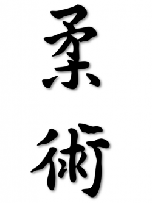

Джуджицу
Джуджицу (яп.) може да се преведе като „изкуството на мекотата” или „пътят на податливостта” и е общо име за редица традиционни японски бойни стилове, съдържащи техники със и без оръжие. То се появява сред самураите на феодална Япония, като метод за победа над въоръжен противник, облечен в доспехи, без използването на оръжие. Поради неефективността на ударните техники срещу противник, носещ доспехи, най-ефикасни се оказват техники като притискане и задържане на противника, задушаване, ключове на ставите и хвърляния. По тази причина те се развиват изключително задълбочено около основния принцип за използване на силата на опонента срещу самия него, а не на директното противопоставяне. Съществуват многобройни вариации на изкуството и най-различни подходи в преподаването му. Различните школи (яп. рюха) могат да включат в арсенала си всички техники на противоборство (хвърляния, ключове, задушавания, задържания, притискане и удари на жизненоважни точки, удари, ритници, хапане, щипане и др.). Обикновено програмите им съдържат и работа с нож, въже или верига, различни по дължина палки и тояги, самурайски меч и други традиционни японски оръжия.